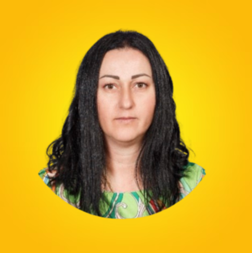

Представяне
Аз съм дипломиран психолог с бакалавърска степен по Психология, специализация „Психични нарушения" от
Нов български университет и магистърска степен по Училищна психология от Пловдивски университет „Паисий
Хилендарски". Професионалният ми интерес е насочен към психологическото консултиране на деца, родители и
семейства, както и към работата с хора в уязвими социални ситуации.
Професионалният ми опит включва дългогодишна работа в системата за закрила на детето и социалните услуги, където съм
участвала в оценка на случаи, консултиране на деца и родители, както и в разработване и реализиране на интервенции в подкрепа на семейства в риск.
В практиката си прилагам интегративен подход, основан на принципите на позитивната психотерапия, транзакционния анализ
и системното мислене при работа със семейства. Работя с уважение към индивидуалните особености на всеки човек и се стремя
към изграждане на подкрепяща и доверителна терапевтична среда.
Образование
Магистър - Училищна психология (2017 - 2018)
Пловдивски университет „Паисий Хилендарски"
Бакалавър - Психология
специализация „Психични нарушения" (2011 - 2015)
Нов български университет
|
Психолог (2025 - в момента) ДЦДМУ "Антония Лафчийска" гр. Ихтиман Работя пряко с деца с увреждания и специални нужди и техните семейства. • Психологическо консултиране на деца и техните семейства • Извършване на психологическа оценка • Изготвяне на сензорен профил • Съставяне на индивидуален терапевтичен план • Прилагане на терапевтични техники • Периодична актуализация на извършената работа |
|
Социален работник (2024 - 2025 г.)
|
|
Социален работник (2017 - 2024 г.)
Отдел „Закрила на детето" - ДСП Ихтиман • Идентифициране и анализиране на случаите на деца, нуждаещи се от специална закрила • Регистриране, проучване и оценка на сигнали за деца в риск • Планиране и развитие на конкретни мерки по закрила на децата и контрол на изпълнението им • Въвеждане и поддържане на данни и информация в създадено електронно досие на дете в риск • Планиране на дейностите по закрила на дете в краткосрочен и дългосрочен план, и проследяване на изпълнението им • Пряка работа с деца в риск и техните семейства • Пряка работа на терен с представители на уязвими групи и малцинства и др. |

За връзка с Антония Ангелова: